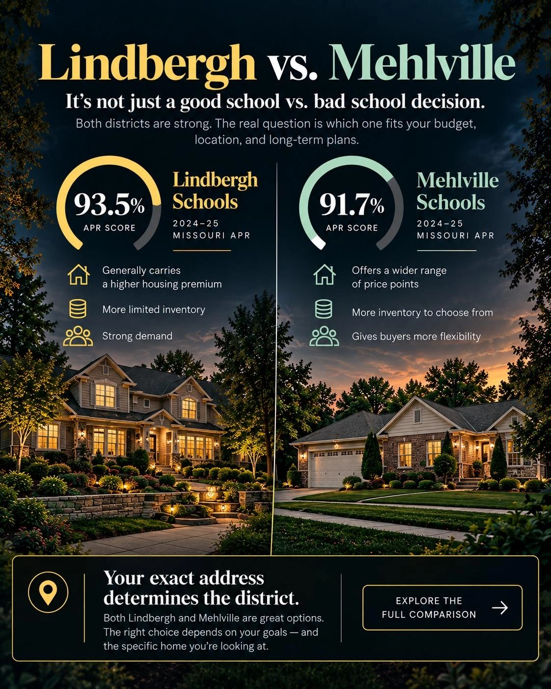
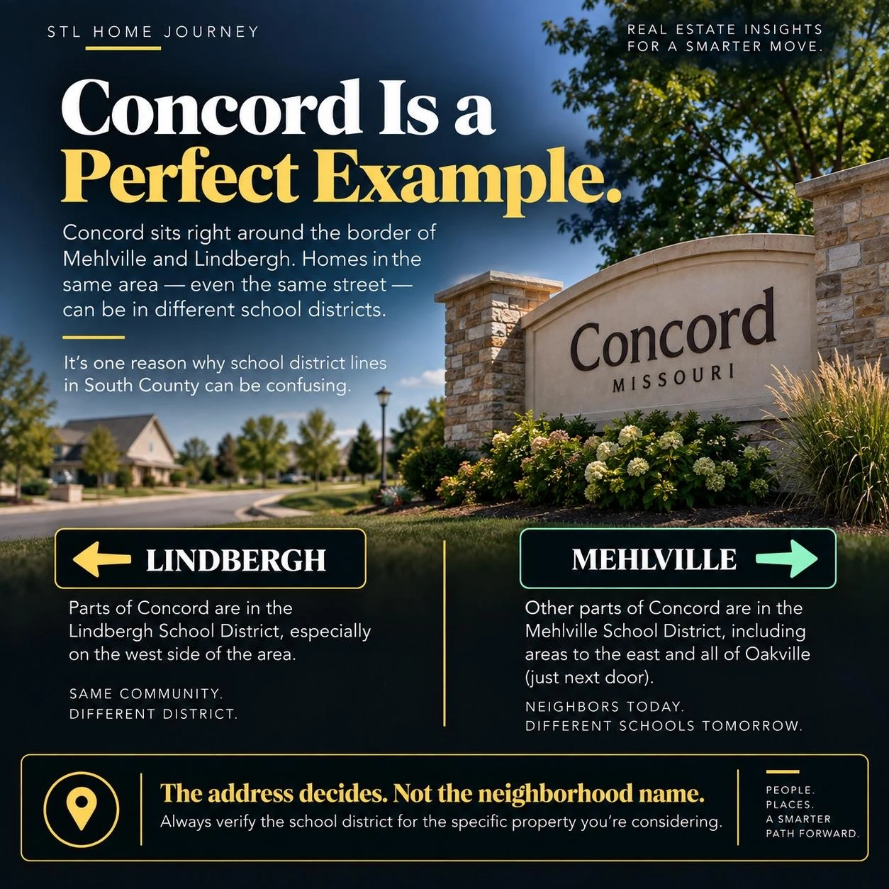

Last updated October 22, 2026
Lindbergh homes generally cost more, with a $400,000 median in 2026 sales versus $350,000 in Mehlville, while Mehlville gives South County buyers a larger inventory field and more price flexibility. Both scored above 90% on Missouri’s 2024–25 Annual Performance Report. The better choice depends on whether you value the Lindbergh premium more than what the same housing budget can buy in Mehlville.
In Concord and other boundary areas, verify the exact address before making an offer — district lines do not follow neighborhood or ZIP-code boundaries.
Short answers first, from 2026 closed single-family sales: 146 in the Lindbergh School District and 285 in Mehlville R-IX, January 1 through October 5. These are past sales, not what’s for sale today.
Demand. In 2026 sales the median Lindbergh-district home sold for $400,000 versus $350,000 in Mehlville R-IX, about $208 versus $175 a square foot. The median house was about the same size in both districts (2,004 vs. 2,000 sq ft), and the Lindbergh house was older (built 1963 vs. 1976), yet it still sold for $50,000 more. Holding style and size steady, the gap shows up most on larger ranches.
Fewer chances in Lindbergh. At $300,000 or less, a 2026 budget reached 32 of 146 Lindbergh sales (21.9%) and 83 of 285 Mehlville R-IX sales (29.1%), more than twice as many houses to choose from.
At $350,000 or less: 52 of 146 Lindbergh sales (35.6%) and 143 of 285 Mehlville R-IX sales (50.2%). At $400,000 or less: 76 (52.1%) and 191 (67.0%). A $400,000 budget reached about half of Lindbergh’s 2026 market and two-thirds of Mehlville R-IX’s.
On larger ranches, yes. Ranches of 1,400–1,799 sq ft sold for a median $216 a square foot in Lindbergh and $194 in Mehlville R-IX, about $35,000 on a 1,600-square-foot house. Smaller ranches of 1,000–1,399 sq ft were nearly even: $234 and $231.
About equally fast. The median days on market (CDOM) was 5 in Lindbergh and 6 in Mehlville R-IX, and more than half sold above the original list price in both: 80 of 146 (54.8%) and 167 of 285 (58.6%).
School district is one of the top three criteria buyers cite when searching South County. But most buyers treat it as a neighborhood-level question when it is actually an address-level question. In South St. Louis County, Lindbergh Schools and Mehlville School District serve neighboring — and in some cases overlapping — communities. A home on one side of a street may feed into Lindbergh; the home directly across feeds into Mehlville.
This matters beyond school preference. District assignment is priced into the market. Homes in the Lindbergh footprint command a premium over comparable homes in the Mehlville footprint, sometimes significantly so. In overlap zones, buyers who do not verify before offering can overpay relative to what the district assignment actually supports — or miss that a home they passed on was actually in the district they wanted.
Both districts are strong. That matters to say plainly, because the conversation in South County sometimes treats this as a binary quality question when it is more accurately a preference and price question.
Both districts exceeded the 90% threshold on the Missouri Department of Elementary and Secondary Education's 2024–2025 Annual Performance Report — placing them among the top performing districts in the state. Only 66 of 553 Missouri public school districts and charter schools scored above that mark.
| Factor | Lindbergh Schools | Mehlville School District |
|---|---|---|
| 2024–25 APR Score | 93.5% (top performing) | 91.7% (top performing) |
| Number of schools | 10 schools | Serves approx. 42 square miles |
| Student enrollment | ~7,497 students | Larger district footprint |
| High schools | Lindbergh Senior High School | Oakville High School, Mehlville High School |
| District headquarters | 9350 Sappington Rd, 63126 | South St. Louis County |
| Price premium in market | Higher — particularly in Crestwood, Sappington, Sunset Hills | Lower — larger inventory field, more price points |
The practical difference most buyers notice is price: in 2026 sales, Lindbergh-district homes sold for about $208 per square foot versus about $175 in Mehlville. Mehlville gives buyers access to a broader inventory field — including Oakville, one of the largest South County communities by area — at a more accessible price tier.

This is the part that confuses buyers most. Municipality lines and district lines do not match. Here is how the nine South St. Louis County neighborhoods in our guide align:
The Oakville High area sold close to Lindbergh prices, but at Mehlville prices per square foot. Its 2026 median was $385,000, near Lindbergh’s $400,000, for larger and newer homes (2,288 sq ft, built 1979), at $174 a square foot versus Lindbergh’s $208. The Mehlville High area had the lowest median, $323,500, at $177 a square foot.
Mehlville R-IX has two high schools, so it’s really two markets. Lindbergh has one. Here are all three, using the high school listed in MLS for each 2026 sale.
| Area (sales) | Median | Sq ft | Built | $/sq ft |
|---|---|---|---|---|
| Lindbergh (146) | $400,000 | 2,004 | 1963 | $208 |
| Oakville High (137) | $385,000 | 2,288 | 1979 | $174 |
| Mehlville High (148) | $323,500 | 1,766 | 1966 | $177 |
All three moved quickly: a median of 5 days on market in Lindbergh, 7 in the Oakville High area and 6 in the Mehlville High area. MLS school fields can be wrong, so verify the high school by address. Oakville High vs. Mehlville High, same house compared →
Concord is where district confusion causes the most buyer mistakes. It is an unincorporated community that spans zip codes 63128 and 63123, and it sits directly in the overlap zone between Lindbergh and Mehlville.
Concord is split between the two districts. Of the 56 sales inside the Census boundary for Concord in 2026, 39 were in Lindbergh and 17 in Mehlville. A buyer who searches "Concord MO homes for sale" will see results from both district footprints mixed together — and most listing descriptions do not clearly state which district applies.
Buyers who care about district assignment in Concord must verify every address individually. Not by zip code. Not by community name. By the specific street address, confirmed directly with the relevant district.

District assignment is priced into the South County market, particularly at the Lindbergh end. Homes in established Lindbergh communities — Crestwood, Sappington, Sunset Hills — carry a premium, and there are fewer of them to choose from: 146 Lindbergh-district sales in 2026 versus 285 in Mehlville.
The 2026 sales medians on this site’s community pages tell part of the story: $729,050 inside Sunset Hills, $427,500 inside Sappington (14 sales) and $365,000 inside Crestwood. Compare those to $385,000 in the Oakville High area, $352,500 inside Concord and $323,500 in the Mehlville High area — a market where Mehlville-district homes can reach similar prices but across a much larger inventory pool.
In overlap zones, the premium can exist subdivision to subdivision. Two adjacent homes with similar square footage, condition, and lot size can carry different price expectations depending solely on which district they fall in. This is exactly why verifying district assignment before offering — not after — is part of doing this correctly.
The median tells you where the middle of each market sat. The better question for a buyer is how much of the market your budget actually reached. Here’s the share of 2026 sales in each district that closed at or below each price.
| Budget (at or below) | Lindbergh (146 sales) | Mehlville R-IX (285 sales) |
|---|---|---|
| $250,000 | 10 of 146 (6.8%) | 38 of 285 (13.3%) |
| $300,000 | 32 of 146 (21.9%) | 83 of 285 (29.1%) |
| $350,000 | 52 of 146 (35.6%) | 143 of 285 (50.2%) |
| $400,000 | 76 of 146 (52.1%) | 191 of 285 (67.0%) |
| $500,000 | 102 of 146 (69.9%) | 240 of 285 (84.2%) |
At every budget, Mehlville R-IX had more sales in reach and a larger share of its market. That’s the trade-off in one table: the Lindbergh side costs more and gives you fewer chances at the same price.
District-by-district breakdowns: what $250,000 reached in Lindbergh and what $300,000 reached in Mehlville.
Comparing medians mixes very different houses. Holding the style and size steady is a fairer test. These are 2026 ranch sales only, in two size ranges.
| Ranch size | Lindbergh | Mehlville R-IX |
|---|---|---|
| 1,000–1,399 sq ft | $234/sq ft (13 sales) | $231/sq ft (23 sales) |
| 1,400–1,799 sq ft | $216/sq ft (22 sales) | $194/sq ft (48 sales) |
Small ranches sold for nearly the same price per square foot in both districts. On the larger ranches the Lindbergh side ran about $22 a square foot higher, roughly $35,000 on a 1,600-square-foot house. Condition isn’t in MLS data, so read this as a guide, not a guarantee for any one house.
See the same-ranch comparison for every St. Louis County district →
Yes, at every size in 2026 sales: about $20 to $35 more a square foot than in Mehlville R-IX, even though the Lindbergh houses were older. These are sales listed in MLS as Traditional style, in three size ranges.
| Size | Lindbergh | Mehlville R-IX |
|---|---|---|
| 1,600–1,999 sq ft | $198/sq ft (10 sales, built 1958) | $178/sq ft (33 sales, built 1973) |
| 2,000–2,399 sq ft | $196/sq ft (13 sales, built 1967) | $174/sq ft (25 sales, built 1978) |
| 2,400–2,799 sq ft | $204/sq ft (11 sales, built 1966) | $169/sq ft (20 sales, built 1988) |
On a 2,200-square-foot house, $22 a square foot is about $48,000. Ranches were different: small ones sold for nearly the same in both districts. These groups are small, 10 to 33 sales each, and condition isn’t in MLS data, so treat them as a guide.
Mehlville R-IX, mostly on the Oakville side. In 2026, 68 of 285 Mehlville R-IX sales (23.9%) were built in 1990 or later, and 43 of those were in the Oakville High area, 31.4% of its sales. In Lindbergh, 27 of 146 (18.5%) were, and they sold for a median $725,000, versus $502,500 for Mehlville R-IX’s.
Lindbergh leans older: 59 of its 2026 sales (40.4%) were built before 1960, versus 49 (17.2%) in Mehlville R-IX. If a newer house matters more to you than the district, that’s worth knowing before you narrow your search.
Here is the only reliable process:
Each of these guides covers the district assignment, housing profile, price tier, and honest tradeoffs for its community:
Which is better, Lindbergh or Mehlville school district?
Both are top performers. Lindbergh scored 93.5% and Mehlville scored 91.7% on the 2024–2025 Missouri Annual Performance Report — both above the 90% threshold that places a district among the state's top performers. The gap is real but not dramatic. The more important question is which district serves your specific address.
Is Concord in Lindbergh or Mehlville school district?
Both: 39 of Concord’s 56 sales in 2026 were in Lindbergh and 17 in Mehlville. You must verify the specific address you are considering — zip code and community name are not reliable indicators in Concord.
Does school district affect home price in South County?
Yes — significantly. Lindbergh-assigned homes carry a price premium, particularly in Crestwood, Sappington, and Sunset Hills. In overlap zones the premium can exist subdivision to subdivision. Verify district assignment before offering, not after.
What school district serves Oakville MO?
Oakville is entirely within the Mehlville School District. Students in the Oakville area attend Oakville High School, which is one of two high schools in the Mehlville district. Verify your specific address directly with the district.
How do I verify which school district a South County home is in?
Contact Lindbergh Schools at (314) 729-2480 or the Mehlville School District directly with the specific street address. Do not rely on Zillow, Redfin, or the listing description — these sources are frequently incorrect in South County overlap zones.
What district serves Affton MO?
Affton is served by the Affton School District — a separate district from both Lindbergh and Mehlville. Buyers targeting a Lindbergh or Mehlville address should not assume Affton falls under either.
Are property taxes higher in Lindbergh or Mehlville?
Higher in Lindbergh, mostly because the houses cost more. The median annual property tax on 2026 sales was $4,048 in Lindbergh and $3,429 in Mehlville R-IX; for homes of 1,500–1,999 square feet it was $3,460 and $3,147, according to MLS sales records. See every home size →
What does a four-bedroom house cost in Lindbergh vs. Mehlville?
In 2026 sales, the median home with four or more bedrooms sold for $520,000 in Lindbergh (62 sales) and $455,000 in Mehlville R-IX (103 sales). The Mehlville R-IX houses were about the same size (2,857 vs. 2,811 sq ft) and much newer (built 1987 vs. 1970).
Do sellers take less than asking in Lindbergh or Mehlville?
About a third do in both. In 2026, 50 of 146 Lindbergh sales (34.2%) and 89 of 285 Mehlville R-IX sales (31.2%) closed below the original list price, a median of about 4% under. More Mehlville R-IX homes sat: 77 (27.0%) took 30 days or more, versus 32 (21.9%) in Lindbergh.
This is one piece of the St. Louis home buying process. See how it all fits together:
📚 Complete St. Louis Buyer Guide →Before you click “Request more information” on a listing, read who calls you in the next five minutes. Details →

Grew up in South St. Louis, lived in Dogtown for 6 years, now in South County. You'll find us at Wellspring on Lindbergh on Sundays. I'm not selling you a house — I'm showing you how to think about buying or selling a house.
One text, email, or call is all it takes to put that experience to work for you.